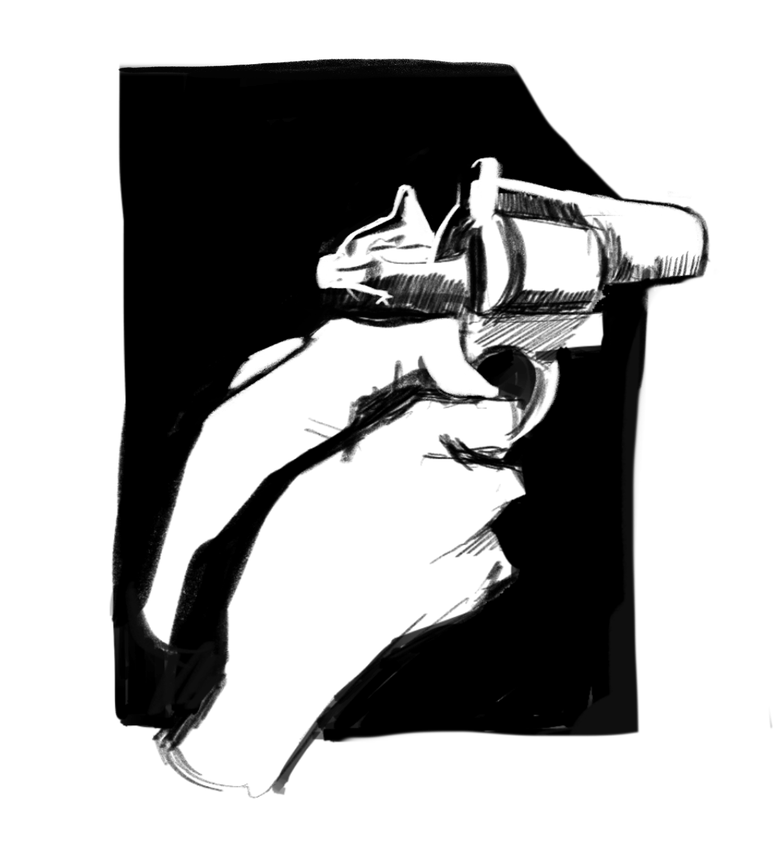
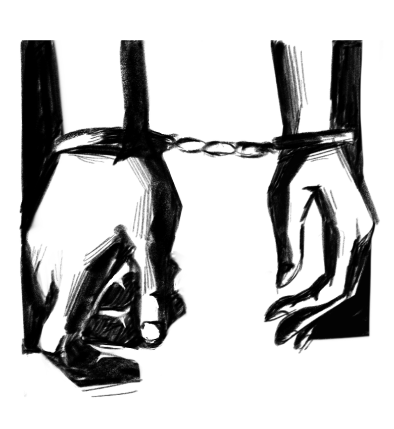

“Code five, go ahead.” The brown-haired young policewoman spoke to the radio as she parked her car, “I got a warrant on Fifth Avenue. It’s Salvador. You know the drill.” The police on the other end of the line continued on as the young lady dazed off, staring at the other side of the road as the description of the wanted criminal imprinted on her head. “That’s him.” She muttered under her breath. An image of a man smiling at her, in his black hooded leather jacket and black trousers. She remembered the adrenaline, the fastening of her heartbeat when he was finally close to her when the back of his fingers was grazing the side of her cheek. She closed her eyes and let him talk, when she opened her eyes, he turned his back and parkoured his way out of my sight. “Harris!” She snapped back to reality when the officer yelled through the radio, “copy.” She responded before immediately driving to the said location at high speed.
“What are you waiting for? We got what we came here for, come on!” A seemingly nervous man muffled through his ski mask. He slung a bagful of jewellery and cash shakily to his shoulder while half of his body is on the other side of the broken window. “Don’t mind him, Markus. He does this every time.” Another man chirped in as he let out a soft chuckle, “isn’t that right, Noel?” Noel Salvador, an infamous thief whom the cops have been chasing non-stop for years, manages to escape every single time. Even the best cop in town was not able to take him to prison. He knows their weakness, more specifically her weakness. “We have to go, man, I don’t want to get caught on my first time.” Markus looked back and forth at the men and at the ledge he had to jump to. “Go on, Markus, you know the drill.” Noel roamed around and picked up a ring. He smiled to himself before turning his body to face his partners, “Markus, Klause, I’ll catch up, as per usual.” He confidently waves at them, signalling for them to leave. Klause patted his shoulder before rushing Markus to jump as he squeezed his body out the window.
Harris was always two steps ahead of everyone in the precinct. She’s been trying to take Salvador down for the many times they’ve come vis-à-vis. Then why is he not in jail already if that’s the case? Well, a forbidden liaison. Harris parked her car and hurried to a specific rooftop. It was Salvador’s usual spot, a little far from the location the policeman told her. “I won’t let him get away this time.” She mumbled under her breath silently before she started running to her destination, patting her gun in the holster around her waist every now and then.
“Hands where I can see them.” Harris busted the door open and readied her revolver in her hands, pointing at the young man who had his back facing her. “Took you a while, officer Harris.” She knew he was smiling, even without looking at his face. She could tell he was happy that they’re in this god awful situation again, knowing it would lead to her having a mental debate whether to cuff him or let him go. “Noel, I’m not letting you get away this time.” He turned around to face the officer with a big smile on his face as he heard his name flowed out of her mouth. “I missed you too, Jessica.” He chuckled while he walked towards her. The younger lady took a small step forward, her hands almost trembling from gripping the revolver too tight, but she kept her steady stance. “You’re stubborn.” She let out a small laugh but held the gun at him. Salvador walked slowly before the tip of the gun was resting against his chest, “says you.” His eyes glued to her shimmering green ones, “you’re the one who keeps chasing me.” He smirked, making the officer roll her eyes, “you like being chased.” She mirrored his smirk, pushing the gun more to his chest letting him feel the pressure. “I really don’t… It gets exhausting.” He shrugged his shoulders, but his eyes never left hers, “then why to keep running?” Her eyebrows furrowed, and she stared at him in confusion, “it’s the only way I can see you. Come on, I thought you’re smart?” He teased. She pulled the gun away from him and put it back in her holster, “I am a few steps ahead of other people.” Salvador moved closer to her as she didn’t budge, “but I’ll always be ahead of you.” He smiled softly before giving her a gentle yet slow kiss. The officer held his hand as the two kissed passionately. Click. Salvador raised his hand to cup her cheek only to realise his hand was cuffed to hers. “Hearts or hands.” Their usual beckoning question in their little game, “ah.” He chuckled, making the other girl laugh with him, “I told you I wasn’t letting you get away.” She pecked his lips, making the thief roll his eyes playfully. “One more kiss before you take me in?” He kindly requested. The officer cheekily nodded before leaning in as she tiptoed. They kissed lovingly, making Salvador chuckle in the kiss, “I choose both.” He pulled away slowly as Jessica followed his lips, craving for more. “What?” She asked, still in a haze from the kiss. He showed his hand still cuffed but no longer linked to hers, “hearts and hands.” he stood to the edge of the rooftop, he looked down to see a trash truck moving, “here… I promise we won’t have to meet like this, not in this situation.” He flicked the ring to her as she caught it, “hasta luego mi amor.” He saluted before letting himself fall off the edge, “Noel!” Jessica panicked as she ran to the edge. She looked down and saw him landing on the bin truck, making her sigh, but later on, she smiled. “Hasta luego, mi amor.”
